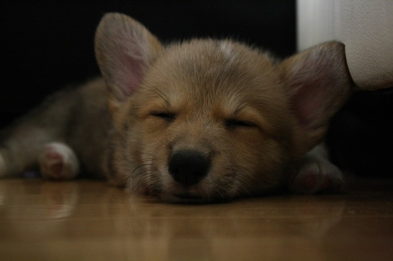
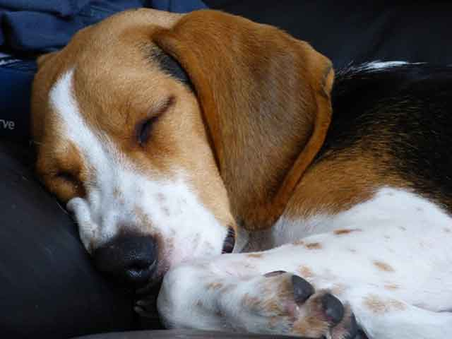
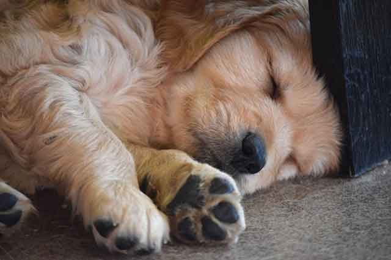
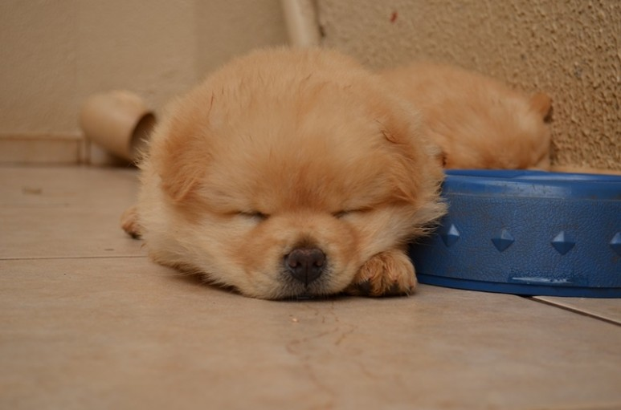
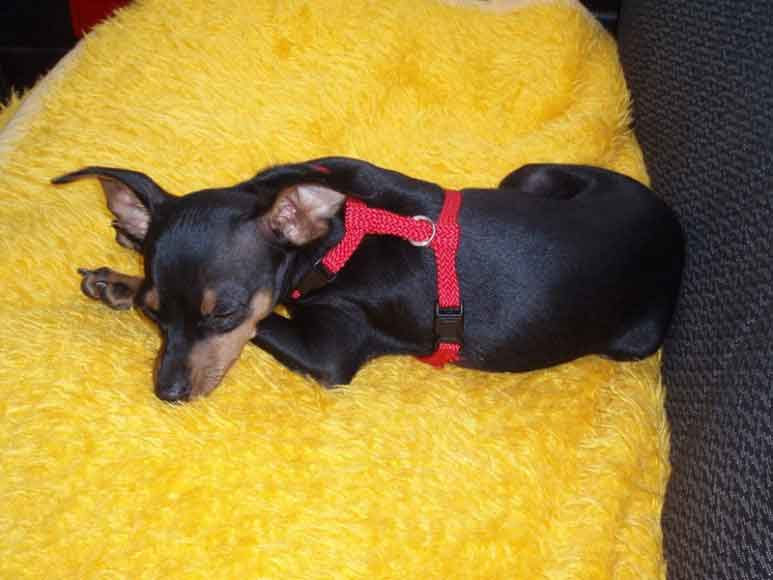

강아지가 코를 골아요! 이유가 뭘까요?
사람처럼 코를 고는 강아지 모습을 보면 웃음이 절로 나올 수밖에 없습니다. 배를 보이고 벌러덩 누워 코를 골며 자는 모습이 영락없이 사람의 모습이거든요! 하지만, 코를 심하게 곤다면 강아지에게도 좋지 않을뿐더러 반려인에게도 상당한 스트레스로 작용할 수 있습니다. 강아지의 심한 코골이, 콧속 내부에 질병이 생겼다는 신호일 수도 있어 주의가 필요합니다. 마냥 귀엽게만 생각할 수 없는 신호! 강아지가 코를 고는 원인, 같이 알아볼까요?
[견종에 따라서]
코를 고는 강아지의 모습, 떠오르는 모습을 기억해 본다면 몇몇 견종에서 특히 자주 나타나는 것을 알 수 있는데요. 불독, 퍼그, 시추, 페키니즈 등 코가 뭉툭하고 짧은 견종일 때 코를 코는 경우가 더욱더 잘 나타납니다. 머리 모양에 따라서 어쩔 수 없이 코를 고는 것이죠! 견종 자체가 그러한 것이므로 코 고는 것을 그대로 방치하기보다는 자세를 바꿔주거나 코를 골지 않는 방법을 찾아주는 것이 좋습니다. 특히, 어린 강아지일 경우 성장에 방해가 되는 요인이 되기도 합니다.
[알레르기, 호흡기 질환]
사람에게도 알레르기가 있듯이 반려동물에도 알레르기가 있습니다. 특히, 미세먼지와 같이 탁한 환경 속에서 숨을 쉴 경우 코를 자극하거나 염증이 생기면서 심한 코골이 증상이 나타날 수 있는데요. 평소에는 조용히 잘 자던 강아지가 어느 날부터 코를 골기 시작했다면, 호흡기 질환이나 알레르기가 생긴 것은 아닌지 고려해 볼 수 있습니다. 만약, 염증이 생긴 것이라면 빠르게 치료할 수 있어야겠죠.
[비만]
만병의 근원인 비만! 강아지도 예외일 수는 없습니다. 머리나 코가 짧은 견종이 아니더라도 비만일 경우 코를 고는 소리가 더욱더 크게 느껴질 수 있습니다. 비만은 사람과 마찬가지로 각종 질병을 유발하는 원인이 되기도 하므로 되도록 살을 빼서 건강 관리를 시작해야 합니다. 코 고는 것은 물론이고 강아지 건강까지 좋아지는 과정을 만들어갈 수 있습니다.
[잠자는 자세]
잠자는 자세가 코골이를 유발한다니! 참 재밌지 않나요? 사람도 잠자는 자세에 따라서 코를 골기도 하고 그렇지 않기도 합니다. 마찬가지로 강아지도 잠자는 자세가 좋지 못하면 코를 고는 경우가 있습니다. 특정 자세에서 코를 골기 시작했다면, 자세를 바꿔주거나 또는 베게를 받쳐줘서 머리가 조금 더 높게 올라간 상태에서 잠을 잘 수 있도록 도와줍니다.
'코를 고는 것' 자체가 질병은 아닙니다. 그래서 반드시 고쳐야 할 증상도 아닌 거죠. 하지만, 안 골던 코를 어느 날부터 골기 시작했다면, 특정한 문제가 생겼을 가능성이 크기 때문에 되도록 관리가 필요하다는 것입니다. 또, 어린 강아지가 코를 골면 숙면을 방해하고 성장에 방해가 될 수 있어 관리가 필요한 것입니다.
[출처] 강아지가 코를 골아요! 이유가 뭘까요? ｜ 작성자 땡구와뽀냥이